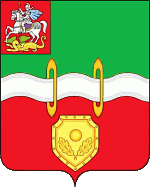
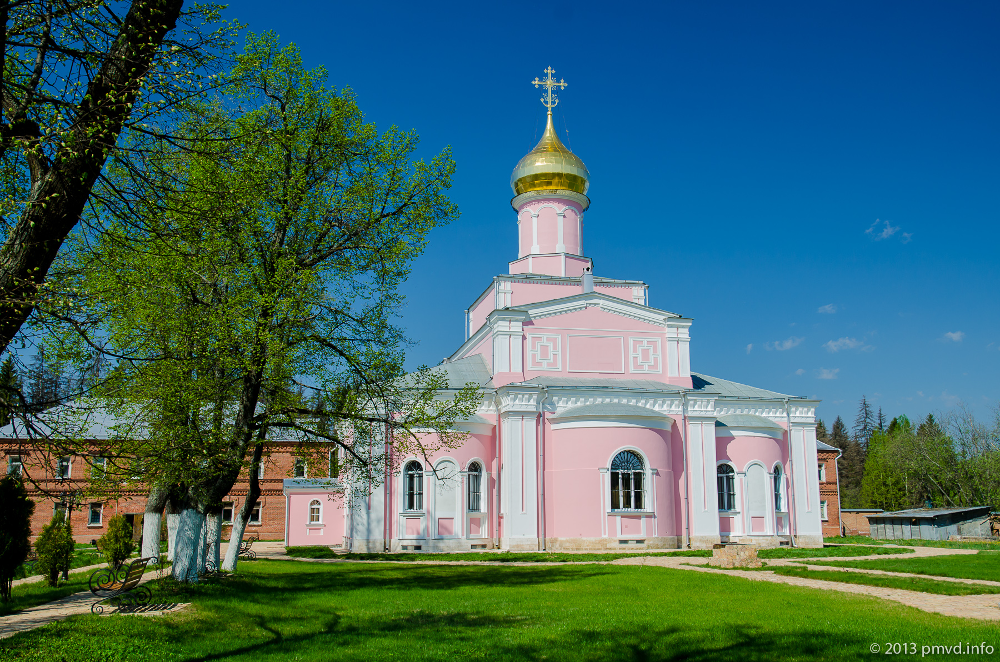
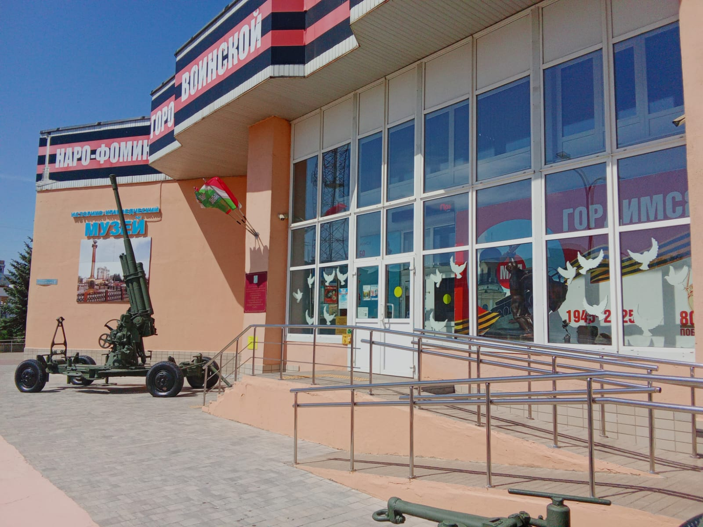
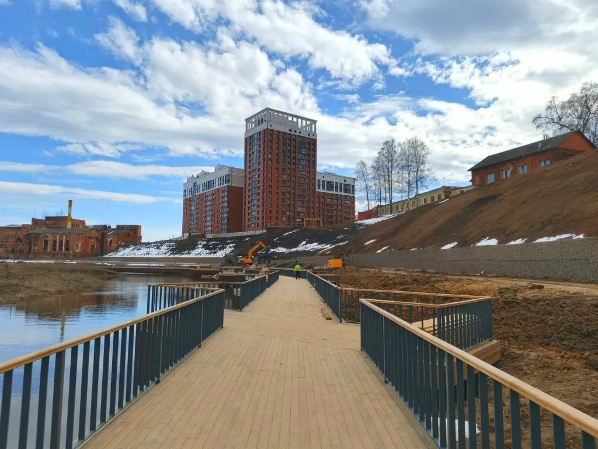
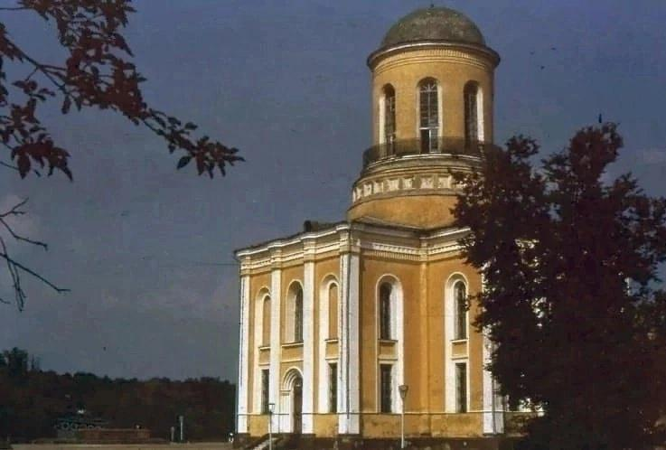
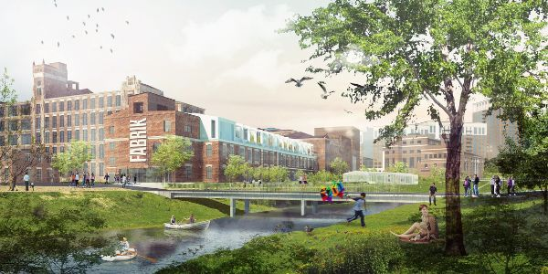
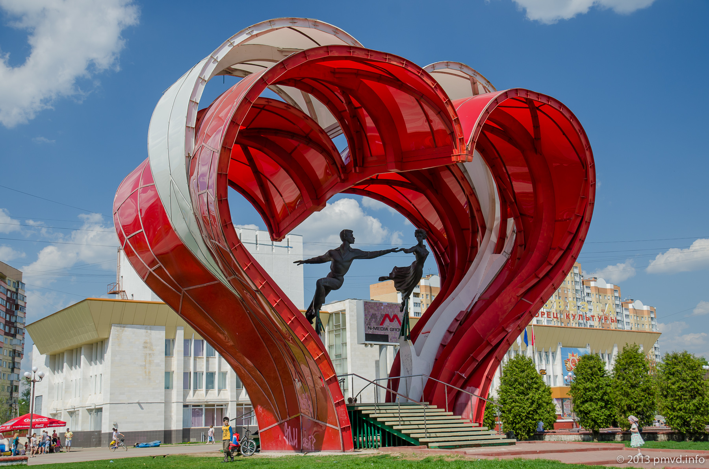
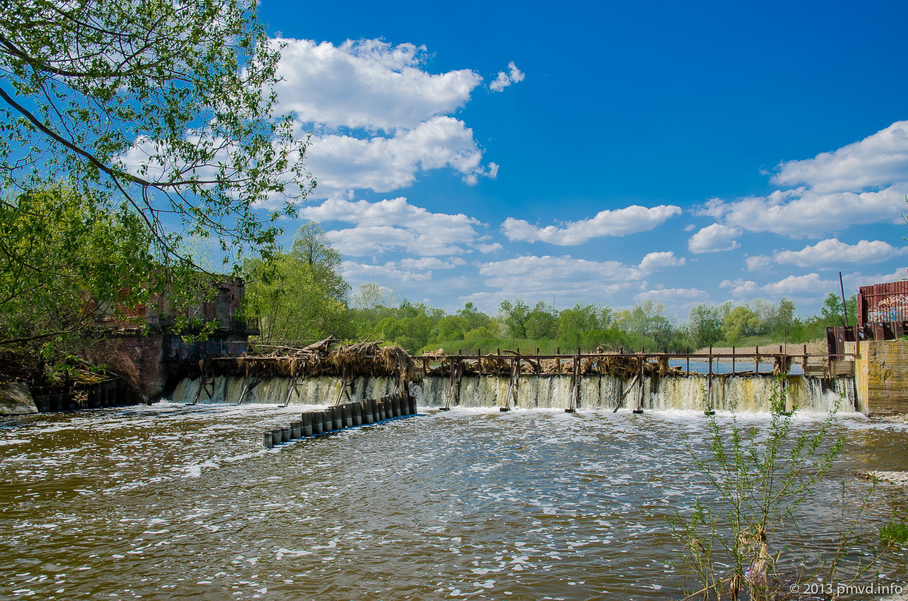
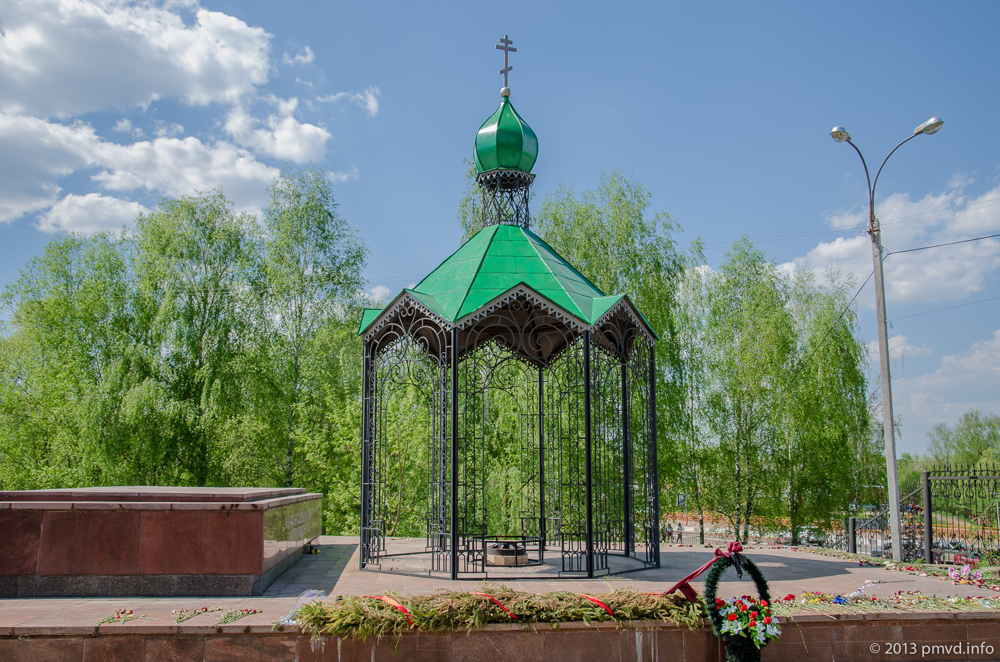
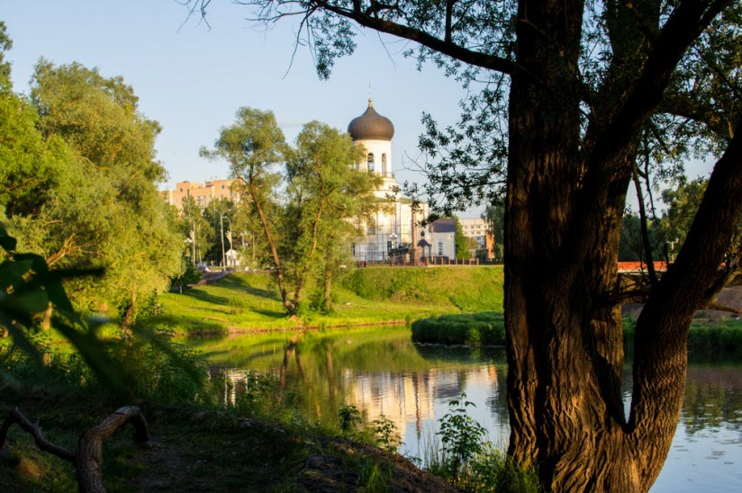

Наро-Фоминск — город воинской славы с богатой историей, расположенный в 56 км от Москвы на берегах реки Нара.



Первое документальное упоминание пустоши Фоминское датируется 1629 годом, однако само поселение известно ещё с XIV века. Изначально на этом месте располагались два села — Нара и Фоминское, которые объединились в 1926 году, образовав город.
Важную роль в истории города сыграла Шёлковая фабрика, основанная около 1840 года, — именно она стала градообразующим предприятием и основой для развития Наро-Фоминска.
Во время Великой Отечественной войны в районе Наро-Фоминска велись ожесточённые бои. Город был практически полностью разрушен, но выстоял. В 2009 году Наро-Фоминску было присвоено почётное звание «Город воинской славы» за мужество, стойкость и массовый героизм защитников города.
В октябре–декабре 1941 года линия фронта проходила прямо через город. Немецкие войска рвались к Москве, и Наро-Фоминск стал одним из ключевых рубежей обороны столицы. Рядом с Никольским храмом, сильно пострадавшим от обстрелов, установлен мемориал — танк Т-34 и Вечный Огонь.
В Наро-Фоминске действует музей боевой славы 4-й гвардейской танковой Кантемировской дивизии. После реставрации 2017 года музей насчитывает свыше 3 600 экспонатов: военная техника, вооружение, экипировка, боевые документы, уникальные фотографии и личные вещи фронтовиков. Ежегодно музей посещают более 10 000 человек.
Город богат достопримечательностями — от величественных храмов до уникальных скульптур и современных архитектурных проектов.

Главный храм города и его архитектурная доминанта. Построен в неорусском стиле, являлся духовным центром Наро-Фоминска на протяжении веков. Именно в нём первоначально располагался историко-краеведческий музей.
Открыт 9 мая 1973 года. С 1991 года расположен на ул. Маршала Жукова, 8. Коллекция насчитывает свыше 25 000 предметов, рассказывающих историю края от древних поселений до наших дней.

Масштабный проект реновации исторической Шёлковой фабрики XIX века. Концепцию разработало голландское бюро Mei architects. 44 лофта с потолками до 7,5 м, кирпичными стенами и огромными окнами.

Яркая скульптурная композиция из двух переплетённых сердец с фигурами танцующей пары. Установлена рядом с городским ЗАГСом и стала популярным местом для фотосессий молодожёнов.

Историческая плотина на реке Нара, построенная при Шёлковой фабрике в XIX веке. Живописный водосброс — одна из визитных карточек города.

Часовня иконы Божией Матери «Неугасимая лампада» и мемориал с Вечным огнём — место памяти защитников города, павших в боях 1941–1942 годов.

Наро-Фоминск славится своими зелёными зонами. Центральный парк имени Воровского расположен на месте бывшей усадьбы князей Щербатовых — здесь есть детские площадки, верёвочный парк и спорткомплекс.
Парк Победы на набережной реки Нара — любимое место прогулок горожан. А в Бобруйском сквере, названном в честь города-побратима, установлена скульптура бобра.
Летом 1903 года А.П. Чехов гостил в окрестностях Наро-Фоминска и дописывал знаменитую пьесу «Вишнёвый сад». Навестить его приезжал сам К.С. Станиславский.